6/10/26 - Niyodo River
The Niyodo river is well known in Japan for it's color and clarity, so much so that there is a color in the country called "Niyodo blue". It's an easily accessible river since a local bus runs along the river. I sped away from the hotel in Kochi city to more quiet and vibrant scenery and caught the 9:04 am bus. Shortly after boarding an older man got on and spoke to me. After replying that I didn't understand Japanese, he said "packraft-to", to which I replied "yes" and pointed to his bag and he nodded. He was carrying a packraft too and said he'd been down the river before. I got off the bus, road walked over a bridge, then about a mile, then got in. The river was generally calm and very clear with a couple class 2 spots but a nice float. I didn't see anyone else on the river except at the take out where a guy was kayaking upriver but in place, presumably for exercise. By the takeout the river flow slowed down because of it nearing the sea. It was a very enjoyable float down river and one I would do again in a heartbeat.
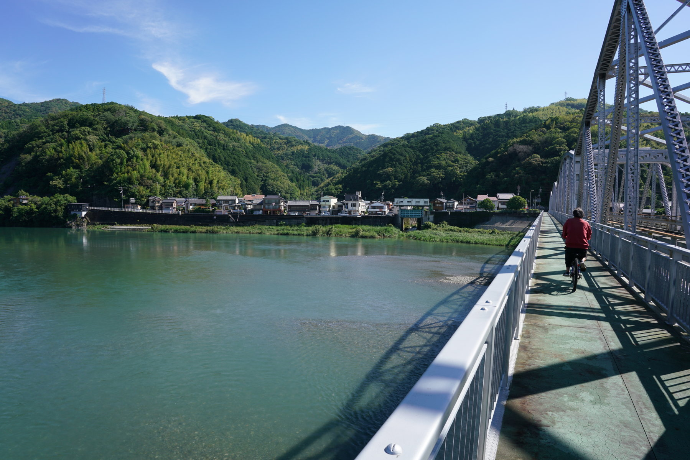
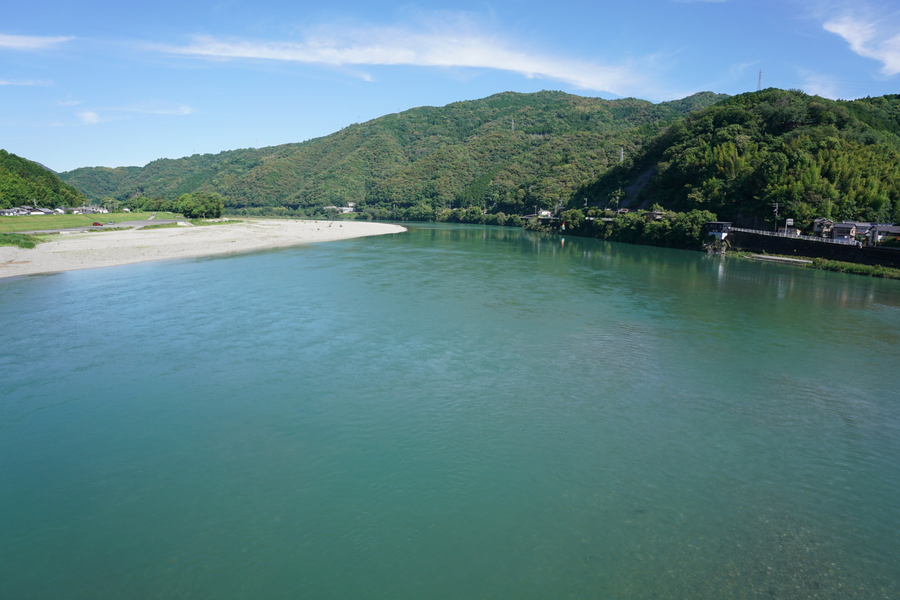
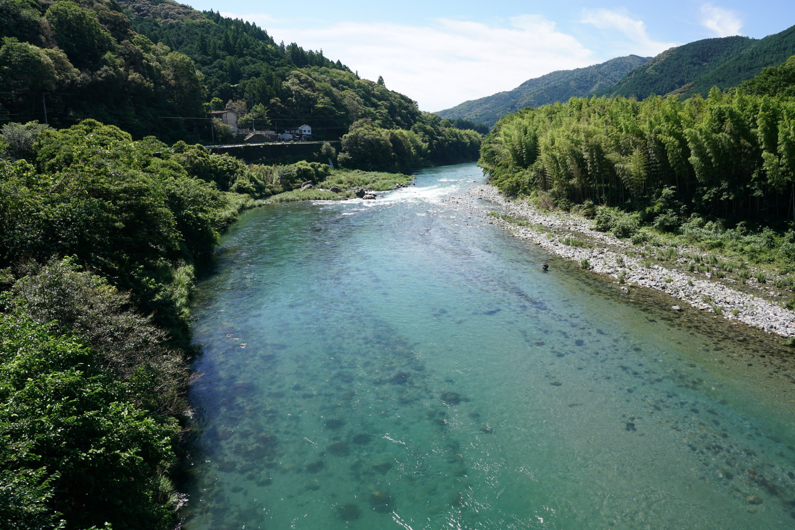
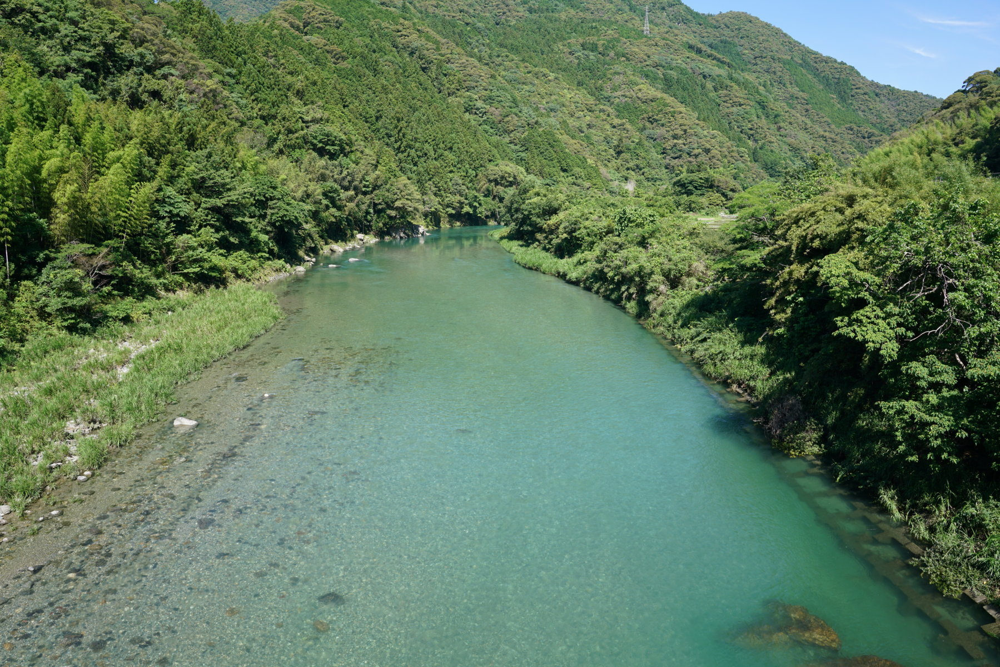
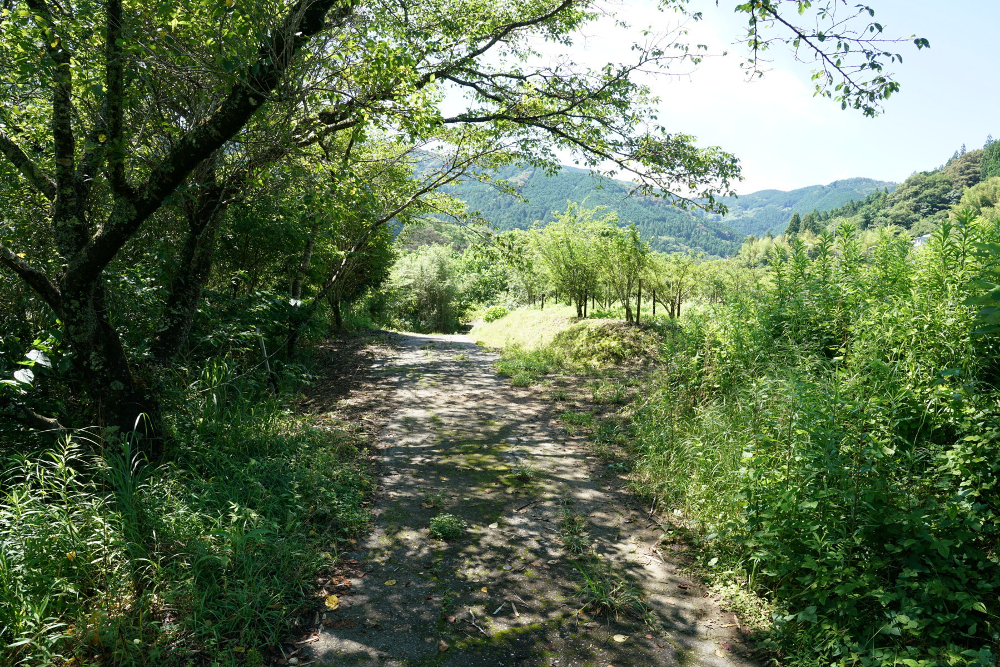
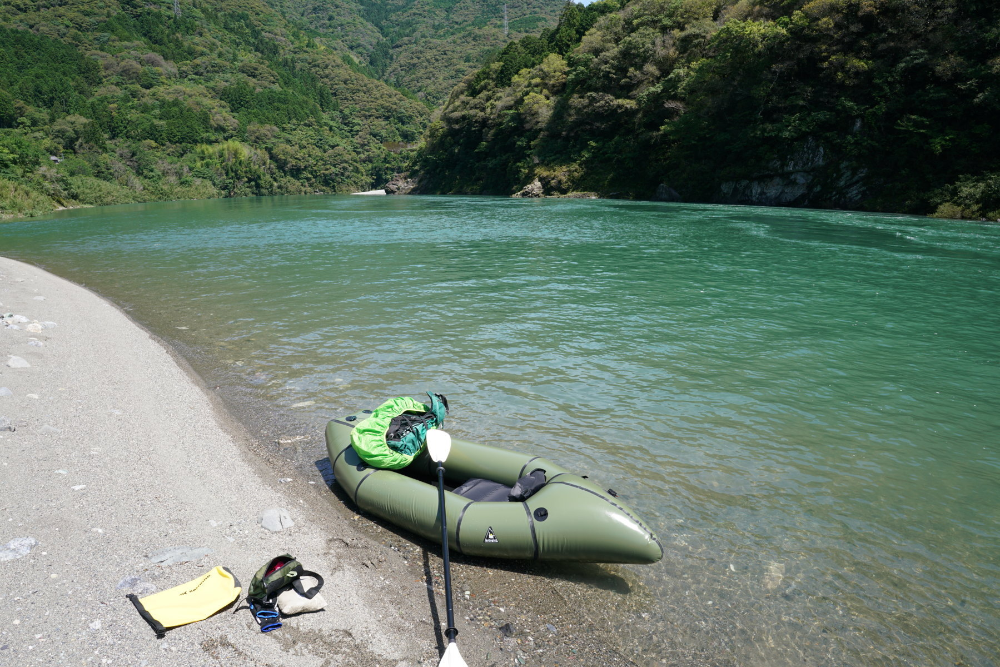
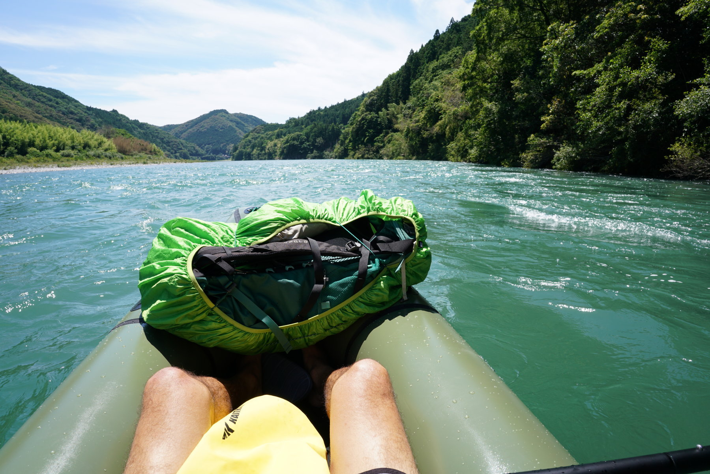
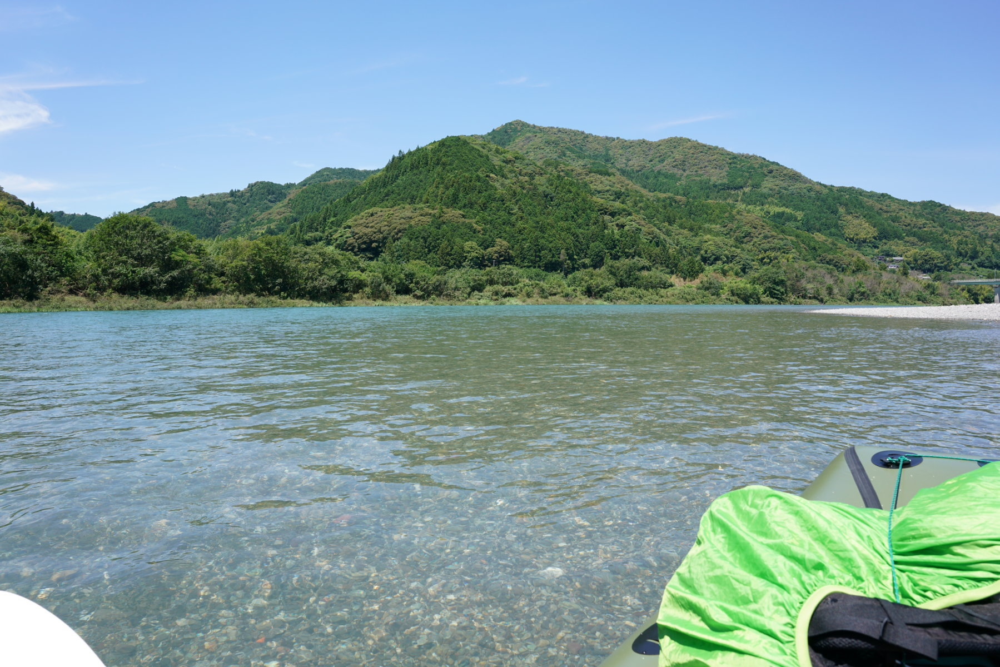
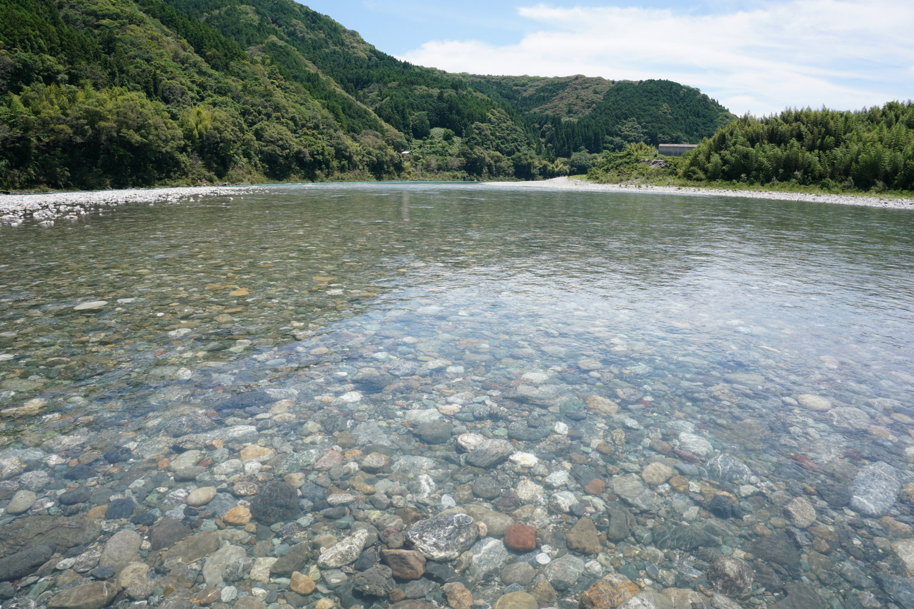
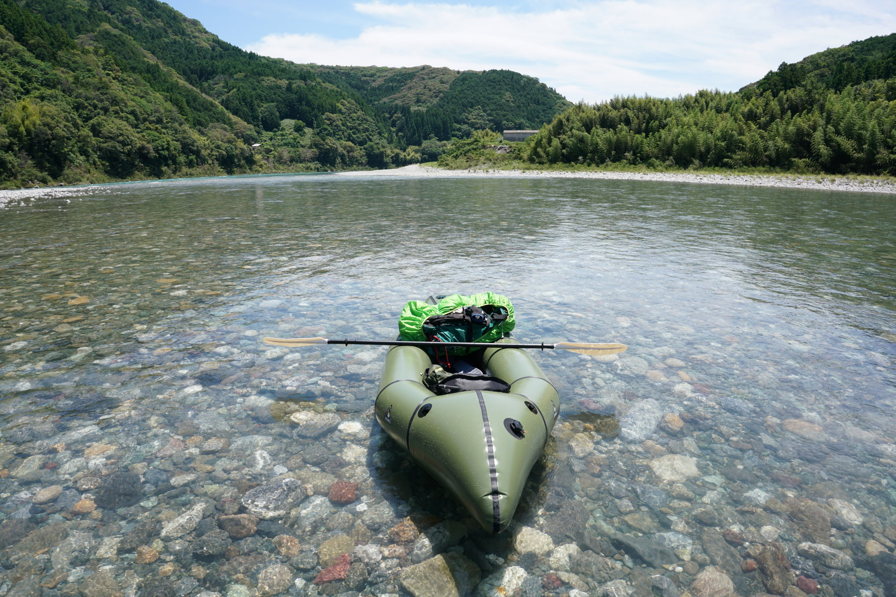
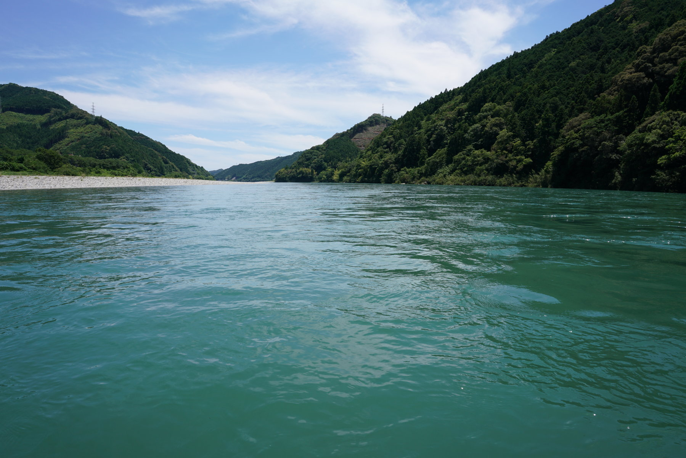
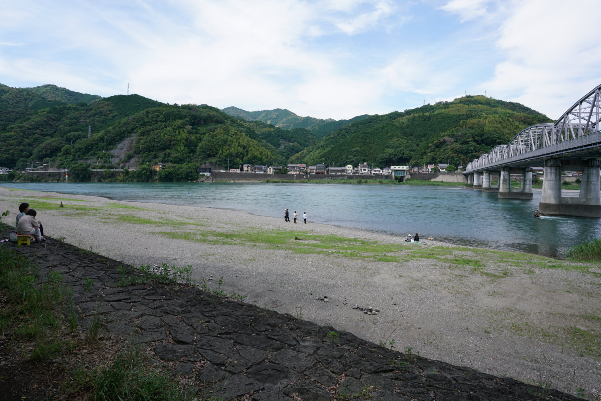
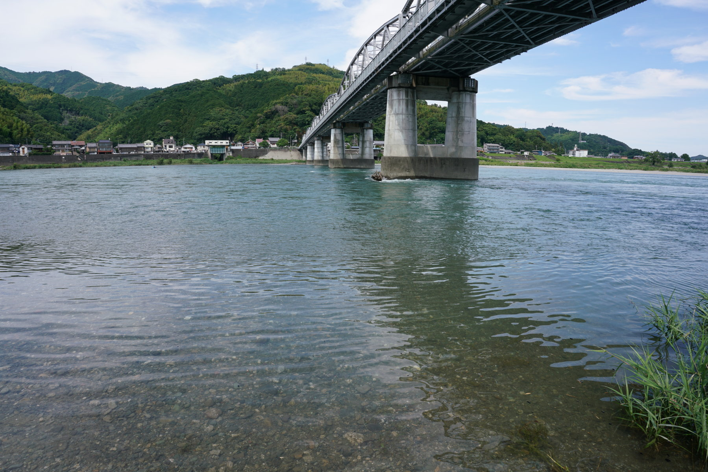
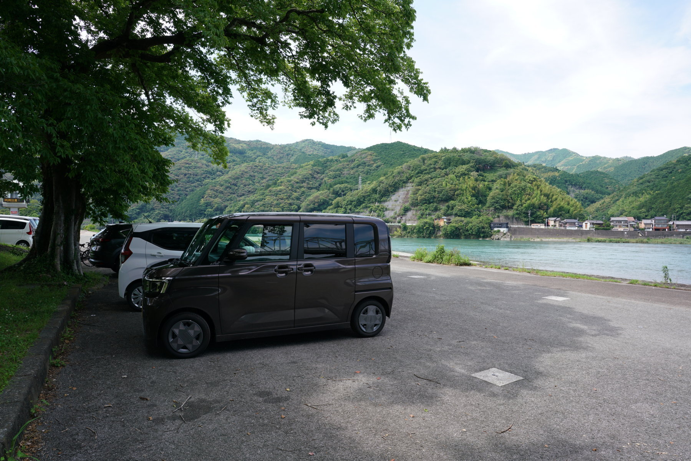